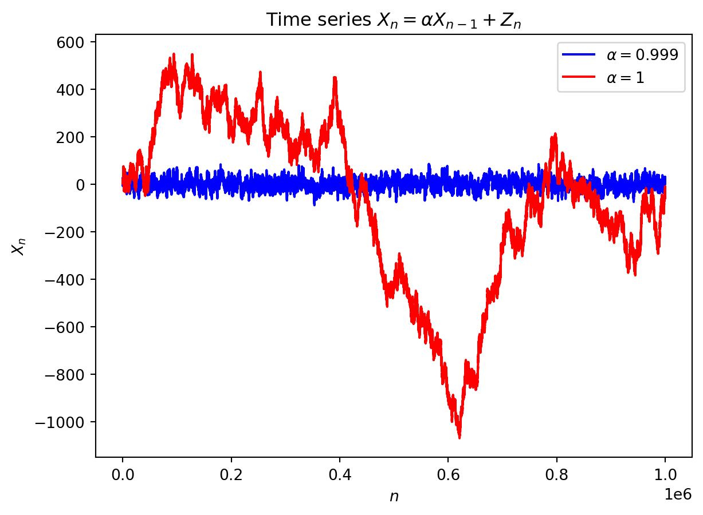

9 Time series
\[ \renewcommand{\P}{\mathbb{P}} \renewcommand{\E}{\mathbb{E}} \newcommand{\R}{\mathbb{R}} \newcommand{\var}{\mathrm{Var}} \newcommand{\cov}{\mathrm{cov}} \newcommand{\corr}{\mathrm{corr}} \newcommand{\dx}{\,\mathrm{d}x} \newcommand{\dy}{\,\mathrm{d}y} \newcommand{\eps}{\varepsilon} \]
Time series is an infinite sequence of random numbers parametrized (indexed) by (discrete) time: \[ X_1,X_2,X_3,\ldots, X_n, \ldots \in\R. \]
In real data, the values \(X_1,X_2,\ldots\) are not independent.
Example 9.1 Let \(Y\) and \(Z\) be two identically distributed random variables with zero mean and variance \(\sigma^2\); i.e. \(\cov(Y,Z)=0\), \(\E(Y)=\E(Z)=0\), \(\var(Y)=\var(Z)=\sigma^2\).
Let \(\lambda\in[0,2\pi]\) be a fixed number, and define \[ X_n = Y \cos(\lambda n) + Z\sin (\lambda n). \] Then \[ \E(X_n) = \cos(\lambda n)\E(Y) + \sin (\lambda n)\E(Z) = 0, \] hence, \[ \sigma^2=\var(Y)=\E(Y^2)-\bigl( \E(Y)\bigr)^2=\E(Y^2), \] and \[ 0=\cov(Y,Z)=\E(YZ)-\E(Y)\E(Z)=\E(YZ). \] Then \[ \E(X_n^2)=\cos^2(\lambda n)\E(Y^2)+\sin^2 (\lambda n)\E(Z^2)+2\cos(\lambda n)\sin (\lambda n)\E(YZ)=\sigma^2<\infty \] and \[ \begin{aligned} \cov(X_n,X_{n+m})& =\E(X_nX_{n+m})\\ &= \cos(\lambda n)\cos(\lambda (n+m))\E(Y^2)+\sin (\lambda n)\sin (\lambda (n+m))\E(Z^2)\\ &\quad +2\cos(\lambda n)\sin (\lambda (n+m))\E(YZ) \\& = \sigma^2 \cos\bigl(\lambda (n+m)-\lambda n \bigr)\\ &= \sigma^2 \cos(\lambda m), \end{aligned} \] hence, \(\{X_n\}\) is stationary.
9.1 Autoregressive model \(AR(1)\)
We consider a time series \(\{X_n\}\) which satisfies \[ X_n=\mu+\alpha (X_{n-1}-\mu)+Z_n, \] whre \(\mu\in\R\) is a constant, \(\{Z_n\}\) is a white noise, and \(\alpha\in\R\) is a parameter. We will always assume that \(\{Z_n\}\) is independent from \(\{X_n\}\). We denote \(Y_n=X_n-\mu\), then \[ Y_n=\alpha Y_{n-1}+Z_n. \] We are going to find conditions to have \(X_n\) stationary. In particular, one needs that \(\E(X_n)\) and \(\var(X_n)\) are constants.
Since \(\E(Y_n)=\E(X_n-\mu)=\E(X_n)-\mu\) and \(\var(Y_n)=\var(X_n-\mu)=\var(X_n)\), we must then have both \(\E(Y_n)=:k\) and \(\var(Y_n)=:v\) constants. We can write \[ \E(Y_n)=\E(\alpha Y_{n-1}+Z_n)=\alpha \E(Y_{n-1})+\E(Z_n), \] i.e. \(k=\alpha k+0\), and hence, either \(\alpha=1\) or \(k=0\). Next, since Z_n is independent from \(\{X_n\}\) (and hence, from \(\{Y_n\}\)), we get \[ \var(Y_n)=\var(\alpha Y_{n-1}+Z_n)=\alpha^2\var(Y_{n-1})+\var(Z_n), \] i.e. \[ v (1-\alpha^2)=\sigma^2. \] If \(1-\alpha^2=0\), i.e. \(\alpha=\pm 1\), then \(\sigma=0\), that is impossible. Hence \(\alpha\neq\pm1\) (and thus, \(\E(X_n)=0\) for all \(n\)). Moreover, for \(\alpha\neq\pm1\), we have \[ \var(X_n)=v=\frac{\sigma^2}{1-\alpha^2}. \] Since \(\var(X_n)\geq0\), we require \(1-\alpha^2>0\), i.e. \[ |\alpha|<1 \Longleftrightarrow -1<\alpha<1. \]
9.2 Autoregressive model \(AR(2)\)
Consider the model \[ X_n=\mu + \alpha_1 (X_{n-1}-\mu) + \alpha_2 (X_{n-2}-\mu) + Z_n \tag{9.1}\]
Example 9.2 Consider the time series \[ X_n=\frac1{12}X_{n-1}+\frac12X_{n-2}+Z_n, \] where \(\{Z_n\}\) is a white noise. Is \(\{X_n\}\) stationary?
Solution: Consoder the characteristic equation \[ \begin{gathered} 1= \frac1{12}\lambda+\frac12\lambda^2,\\ \lambda^2 +\frac16\lambda-2=0,\\ D= \biggl( \frac16 \biggr)^2-4\cdot(-2)=\frac1{36}+8=\frac{289}{36},\qquad \sqrt{D} = \frac{17}{6},\\ \lambda_1=\dfrac{-\dfrac16-\dfrac{17}{6}}{2}=-\frac{18}{12}=-\frac32,\\ \lambda_2=\dfrac{-\dfrac16+\dfrac{17}{6}}{2} =\frac{16}{12}=\frac43. \end{gathered} \] Since \(|\lambda_1|=\frac32>1\) and \(|\lambda_2|=\frac43>1\), the time series \(\{X_n\}\) is stationary.
Example 9.3 Consider the time series \[ X_n=\frac1{3}X_{n-1}+\frac23X_{n-2}+Z_n, \] where \(\{Z_n\}\) is a white noise. Is \(\{X_n\}\) stationary?
Solution: Consider the characteristic equation \[ \begin{gathered} 1= \frac1{3}\lambda+\frac23\lambda^2,\qquad 2\lambda^2 +\lambda-3=0,\\ D= 1^2-4\cdot 2\cdot(-3)=25,\\ \lambda_1=\dfrac{-1-5}{2\cdot2}=-\frac{6}{4}=-\frac32,\\ \lambda_2=\dfrac{-1+5}{2\cdot2} =\frac{4}{4}=1. \end{gathered} \] Here \(|\lambda_1|=\frac32>1\), however, \(|\lambda_2|=1\); hence, the time series \(\{X_n\}\) is non-stationary.
9.3 Autoregressive model \(AR(p)\)
We consider a generalisation of the previous models: \[ X_n=\mu + \alpha_1 (X_{n-1}-\mu) +\ldots + \alpha_p (X_{n-p}-\mu) + Z_n \tag{9.2}\]
Remark. The roots of the characteristic equation may be found numerically, using e.g. Python.
9.4 \(ARMA(p,q)\)-model
Here “AR” stands for “autoregressive” and “MA” stands for “moving average”: this model includes past white noise, namely: \[ \begin{aligned} X_n=\mu &+ \alpha_1 (X_{n-1}-\mu) +\ldots + \alpha_p (X_{n-p}-\mu) \\&\quad + Z_n +\beta_1 Z_{n-1} +\ldots + \beta_q Z_{n-q}. \end{aligned} \]